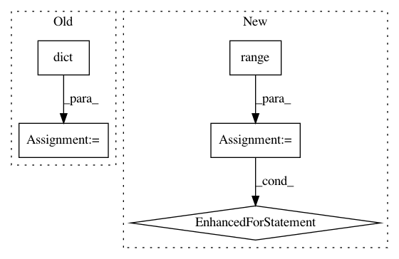

b71c912da70e307ff1a9f07c7ca277a727306126,python/ray/tune/examples/mlflow_example.py,,easy_objective,#Any#,18
Before Change
def easy_objective(config):
for i in range(20):
result = dict(
timesteps_total=i,
mean_loss=(config["height"] - 14)**2 - abs(config["width"] - 3))
tune.report(**result)
time.sleep(0.02)
After Change
// Hyperparameters
width, height = config["width"], config["height"]
for step in range(config.get("steps", 100)):
// Iterative training function - can be any arbitrary training procedure
intermediate_score = evaluation_fn(step, width, height)
// Feed the score back back to Tune.
tune.report(iterations=step, mean_loss=intermediate_score)
time.sleep(0.1)
if __name__ == "__main__":
client = MlflowClient()
experiment_id = client.create_experiment("test")
In pattern: SUPERPATTERN
Frequency: 4
Non-data size: 5
Instances
Project Name: ray-project/ray
Commit Name: b71c912da70e307ff1a9f07c7ca277a727306126
Time: 2020-07-05
Author: rliaw@berkeley.edu
File Name: python/ray/tune/examples/mlflow_example.py
Class Name:
Method Name: easy_objective
Project Name: reinforceio/tensorforce
Commit Name: caa5ccc42c3d7e0004688a91e9e4a5b42b1a8957
Time: 2020-02-11
Author: alexkuhnle@t-online.de
File Name: test/test_documentation.py
Class Name: TestDocumentation
Method Name: test_readme
Project Name: AIRLab-POLIMI/mushroom
Commit Name: f6c7f0d36f5326074f6796386006609e65c1f63f
Time: 2017-03-15
Author: carlo.deramo@gmail.com
File Name: examples/run.py
Class Name:
Method Name:
Project Name: scikit-learn-contrib/categorical-encoding
Commit Name: b5034279b48ae96ffdd4714f96e0f62b0f4807fc
Time: 2018-10-26
Author: jcastaldo08@gmail.com
File Name: category_encoders/ordinal.py
Class Name: OrdinalEncoder
Method Name: ordinal_encoding